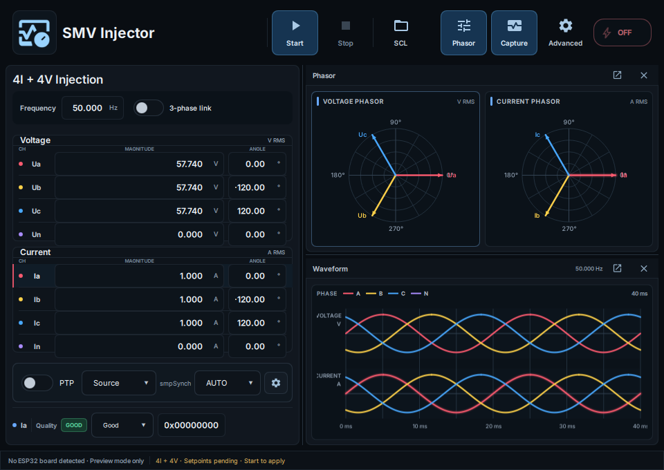

01 / SAMPLED VALUES
Simulated Merging Unit output
Configure four current and four voltage channels with amplitude, phase and quality. Publish real IEC 61850 SV multicast Ethernet traffic using the ESP32-P4.
ARStack Studio puts real IEC 61850 Sampled Values and PTP Ethernet traffic on your test network using an affordable ESP32-P4. Simulate a Merging Unit, configure 4I+4V waveforms and experiment with SCL-defined stream profiles—right from your desktop.

From live electrical waveforms to protocol identifiers, ARStack gives you direct control of the process-bus traffic your lab subscribers see.
Configure four current and four voltage channels with amplitude, phase and quality. Publish real IEC 61850 SV multicast Ethernet traffic using the ESP32-P4.
Generate PTP Announce, Sync and Follow_Up on the wire with the simulation timebase and inspect sample synchronization in the lab. No external GPS receiver needed.
Import supported SCD, SCL, CID or IID files, deploy supported SV profiles, tune waveforms, START/STOP, capture and reconnect without resetting the powered board.
M4 software includes SCL-driven three-virtual-MU configuration and group START/STOP with shared sample/PTP timing. The publicly shipped dual-firmware stable package carries these integrated controls, while sustained 3 × 4,000 fps on-wire load acceptance and v3.x hardware qualification are still being collected.
The stable Studio release offers separate firmware images for ESP32-P4 pre-v3 and v3.x silicon and a matching firmware catalog. v3.x board support remains an engineering preview pending broader physical acceptance.
See supported packages and release notes ↗Try the Studio interface without hardware, then attach a compatible ESP32-P4 to transmit real traffic.
Windows Setup ZIP is recommended for easier browser downloads. Linux AppImage is available directly. Both are sourced from the public stable release; firmware artifacts are published alongside them.
Windows 10/11 x64 · Extract ZIP, run the included installer
Linux x86_64 · chmod +x, then run the AppImage
Windows x64 · Launch without installing
Pre-v3 & v3.x images · Revision-aware release catalog
Also published: direct Windows Setup EXE, SHA256SUMS.txt, firmware-catalog.json, firmware-manifest.json and release-provenance.json. Windows Setup ZIP avoids direct-EXE download friction but does not bypass Windows security checks for unsigned installers. Installation help ↗